All mushrooms can be grown on sawdust and logs unless specified.
Lion's Mane
This is one of the most profitable mushrooms you can grow and my favorite.Spores are white, it has a bitter taste unless cooked, and has a seafood-like texture with
good flavor.
A lot of recent studies show that Lion's Mane does support neurogenesis (growth of neurons).
This mushroom has an earthy taste and a unique texture. Its wispy mycelium makes it hard to
tell if it is fully colonized, but it is a very aggressive mushroom and grows quickly.
Shiitakes
This is a moderately profitable mushroom that is a little tricky to get right indoors.
To get it right, you have to use low nutrients and cold shock it after curing. It also has
to be kept at a low temperature to ensure curing is done properly. Spores are white, and it is best cooked because it can cause stomach issues in some people
and may have a bitter taste.This is a mushroom that is used in traditional Japanese cooking; however, in recent years,
there has been a decline in Japanese interest in this mushroom.It has an earthy taste and a unique texture. stems are not edible but cant be used in stocks
or dried and powdered
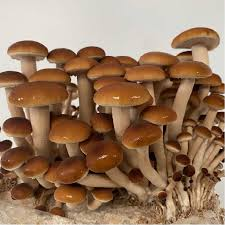
Pioppino
The Pioppino mushroom offers a robust, nutty flavor with a slightly chewy texture. It's
ideal for soups, stir-fries, and even gourmet recipes, thanks to its distinct taste that stands out
but doesn’t overpower.Cooking is recommended because it breaks down cell walls and enhances their flavor
Studies have shown that Pioppino mushrooms contain a variety of beneficial compounds,
including polysaccharides with antioxidant, anti-aging, and organ-protecting properties.
Additionally, they contain compounds with anti-inflammatory and anti-tumor attributes, as well as
Agrocybin, a peptide with antifungal benefits.
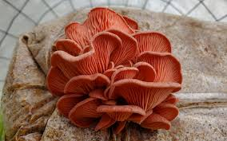
Pink Oyster
Taste like ham and can be used as a replacement for bacon bits.Has a short shelf life and the mycelium doesn’t survive in the fridge.Pink Oyster mushrooms are a striking variety of oyster mushrooms known for their vibrant pink color, rapid growth, and meaty texture. They are a popular choice among cultivators due to their ease of cultivation and ability to thrive on a variety of substrates. Pink oysters are native to tropical and subtropical regions but are cultivated worldwide in controlled environments.
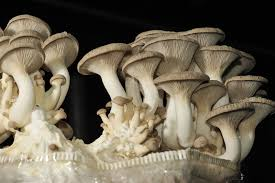
King oyster
Kings are a weird mushroom because when the temps and/or humidty is not right they get
really tiny caps.When grown in clusters because of higher temps and/or humidity, they are more dense but
still edible.they are a very good meat substiute, high in antioxidants, and high in fiber
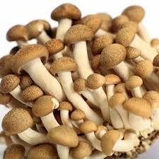
Brown beech
Their other name is "buna shimeji" there Japanese name, and they originated there.
These mushrooms have a firm, crunchy texture and a savory, slightly nutty flavor.
Not edible unless cooked.
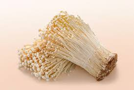
Enoki
the wild variation is so different than the cultivatied veriison that it is now a different
species.a common mushroom to find in supermarkets in SEA(southeast asia)they require a colder temp like king oyster to fruitthey cook very fast and develop a silky, noodle-like texture and are very good in soups and
ramen
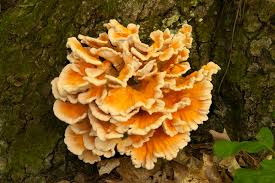
Chicken of the woods
are hard to grow in bags and is better on logstaste like chicken and texture similar but some people say have a seafood taste
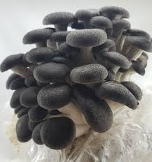
Black Pearl Kings
This strain was devleoped in japan and is not realted to king oysters at all and is a
Pleurotus ostreatus hybrid crossed from black pearls and another Pleurotus ostreatus hybrid.
Has a very rich and umami flavor, has a dense texture
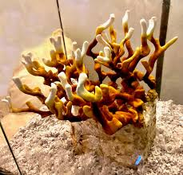
Antler Reishi
This is a mushroom that is used for medicinePolysaccharides (β-glucans): Known for immune-boosting and anti-cancer effects.
Triterpenoids (ganoderic acids): Anti-inflammatory, antioxidant, and liver-protective effects.
Sterols: Beneficial for cholesterol management and overall immune health.
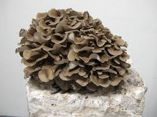
Maitake
Maitake mushrooms (Grifola frondosa), or Hen of the Woods, are known for their earthy, nutty flavor and meaty texture, commonly used in stir-fries, soups, and roasted dishes. Their clustered, ruffled appearance makes them a culinary and visual standout.
Rich in nutrients like beta-glucans, antioxidants, and vitamins B and D, Maitake offers potential health benefits, including immune support, blood sugar regulation, and anti-inflammatory effects. Traditionally used in Chinese and Japanese medicine, they are valued for promoting overall wellness.
Though more challenging to grow, Maitake thrives on hardwood substrates, rewarding cultivators with its unique flavor and medicinal properties.this are slow growers, need alot of FEA when compared to other mushrooms
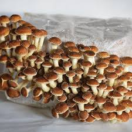
Chestnut
Are slow growers but it is worth the pay off.Gorden Ramesy said this is his favorite mushroom. flavor is earthy and nutty with a rich umami taste.
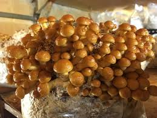\
Nameko
One of the most commonly grown in SEA (southeast asia)Native to japan and china, has a gelatinous coating that the mushroom gets it name from.Nameko translates to "slimy mushroom" when translatied from Japanesethe gelatinous coating is useful for thicking soups and sauces, maintains the rich flavor
Compost/Manure mushrooms
Some maybe can use a mix of Mastermix's and Manure/Compost.
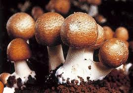
Agaricus blazei Murill (ABM) or Agaricus subrufescens
Is grown for its taste and medicine value>
ABM mushrooms are low in calories but rich in:
Proteins and essential amino acids
Polysaccharides (β-glucans)
Vitamins: B-complex vitamins, vitamin D precursors (ergosterol)
is closely realted to common ink capswill spoil in a matter of hours after harvrest so it is best to use them right awayGoes through process called deliquescence that causes the caps to turn into a "ink".